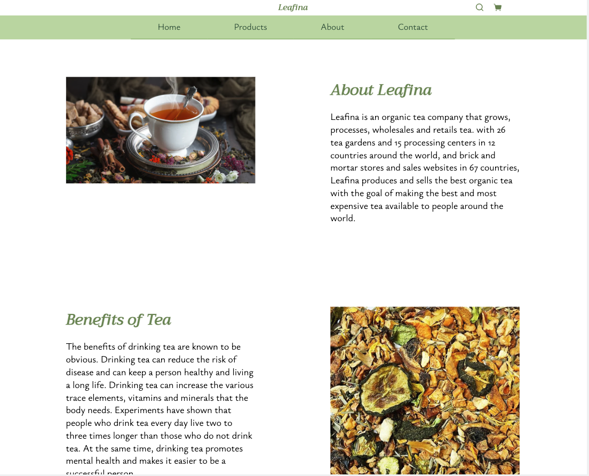

In this program, I worked with my group to complete the design and development of the Leadina website. We first analyzed the users of this website and determined the color scheme and style to be used based on their preferences and needs. We realized that the client of this website is looking for a healthy life and likes organic food, so we used green as the main color to emphasize the "healthy" theme. Then we used different colors of yellow to make the whole page more coherent and aesthetically pleasing.

After that, we designed a style guide based on this style. We designed every element and widget needed in a web page such as buttons, menus, product lists and checkout pages. reusing these elements makes the web page more consistent.

finally reused the elements from the style guide to create the homepage, product list, product details, about and contact page. We use the same elements to build the site because it gives the site a uniform style and all pages can have the same style.

In this project we mainly used HTML, CSS and JavaScript for the design and development of a website. In this project, we focused on making the content of the website clearer and easier to read. On the other hand, we made the website fit any device with different screen sizes and resolutions by using a lot of adaptive settings. Finally, we used the same elements to keep the website style uniform. Our goal was to make the user's access to information more efficient, and we achieved our goal perfectly in the end result!
